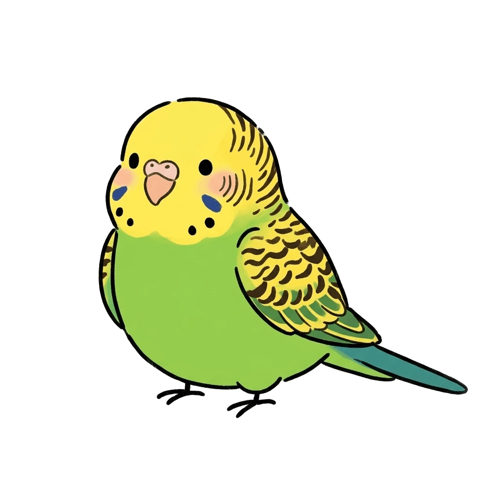
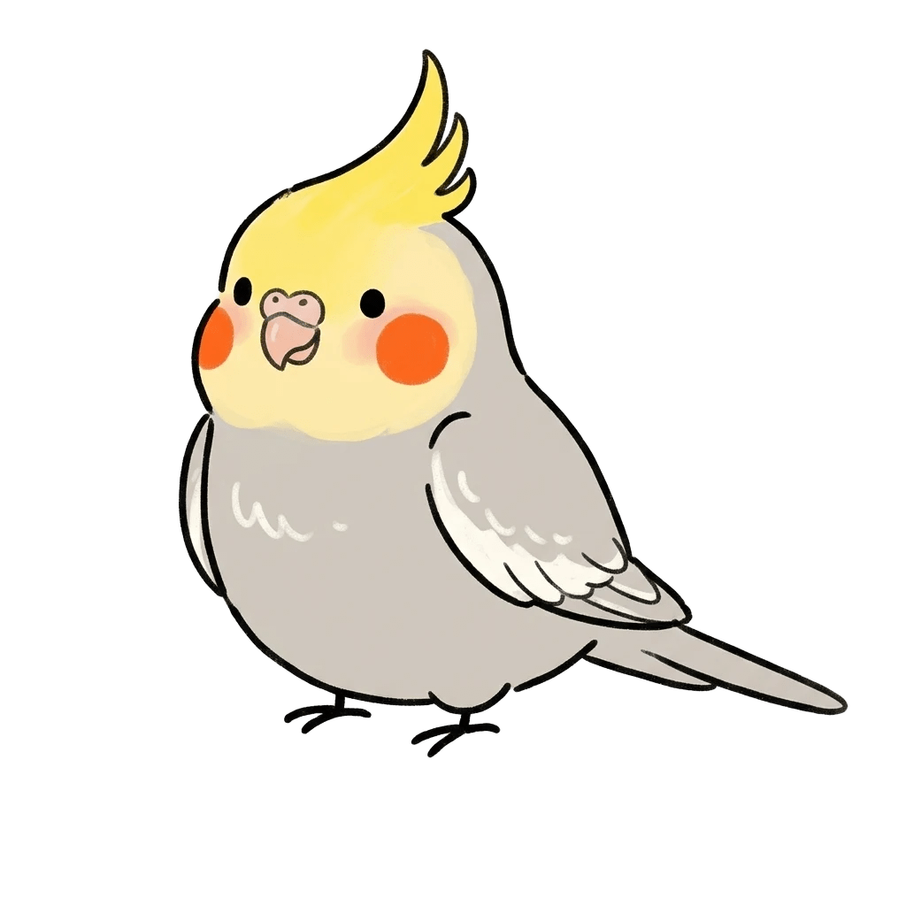
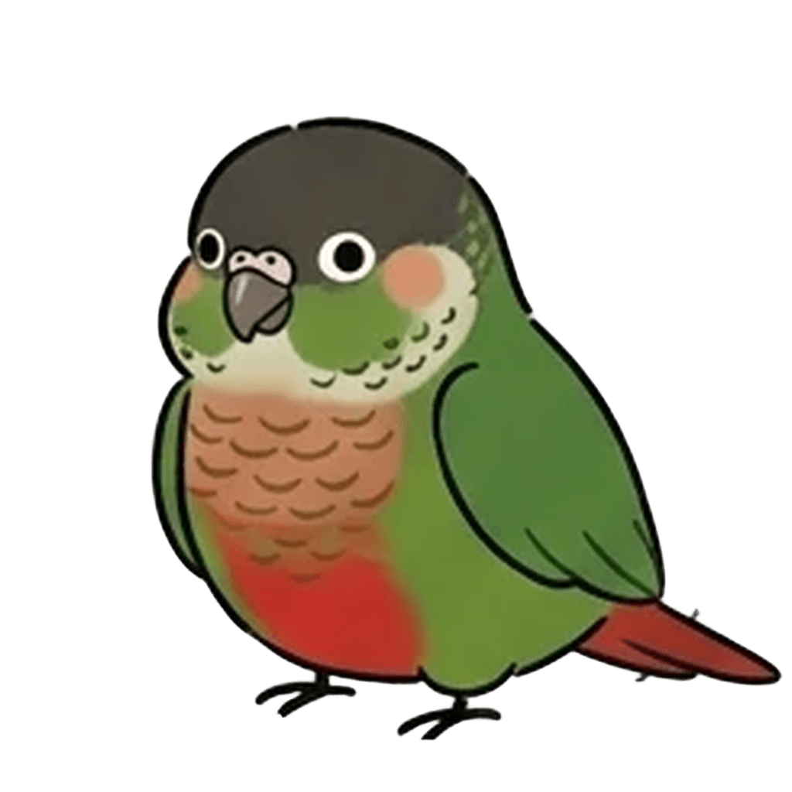
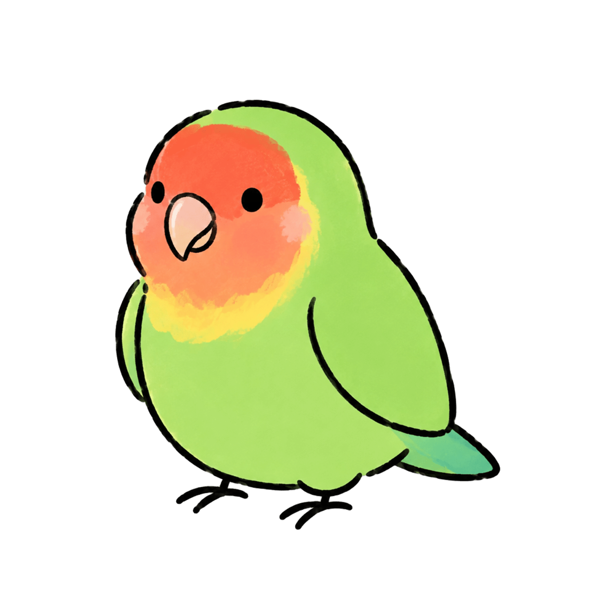
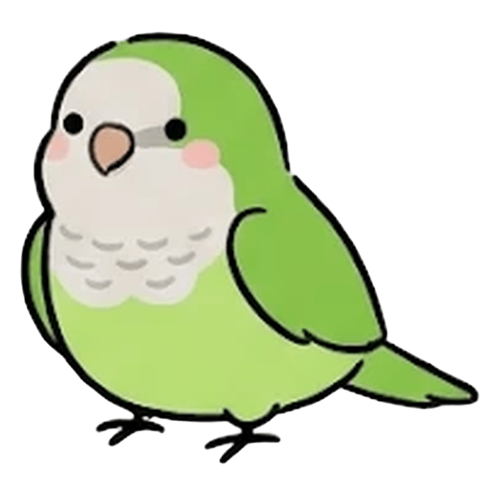
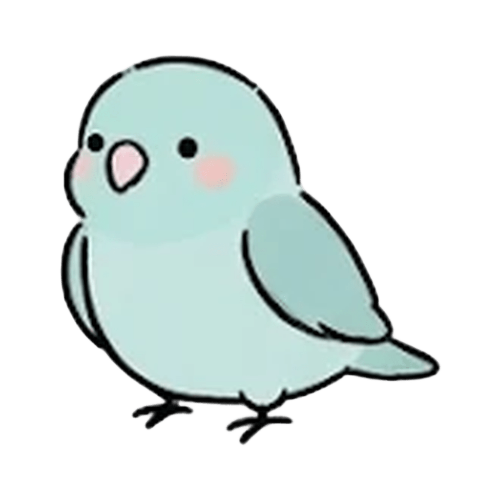
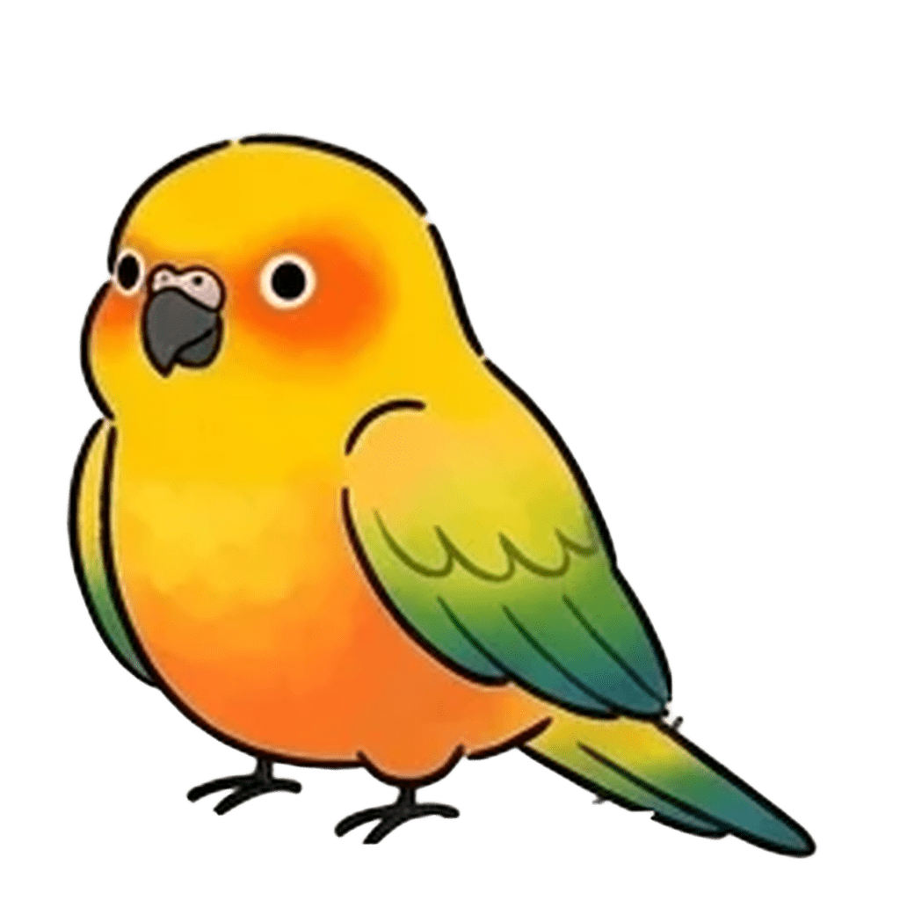
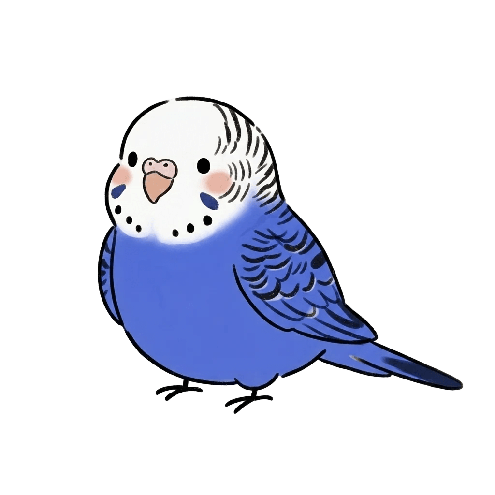
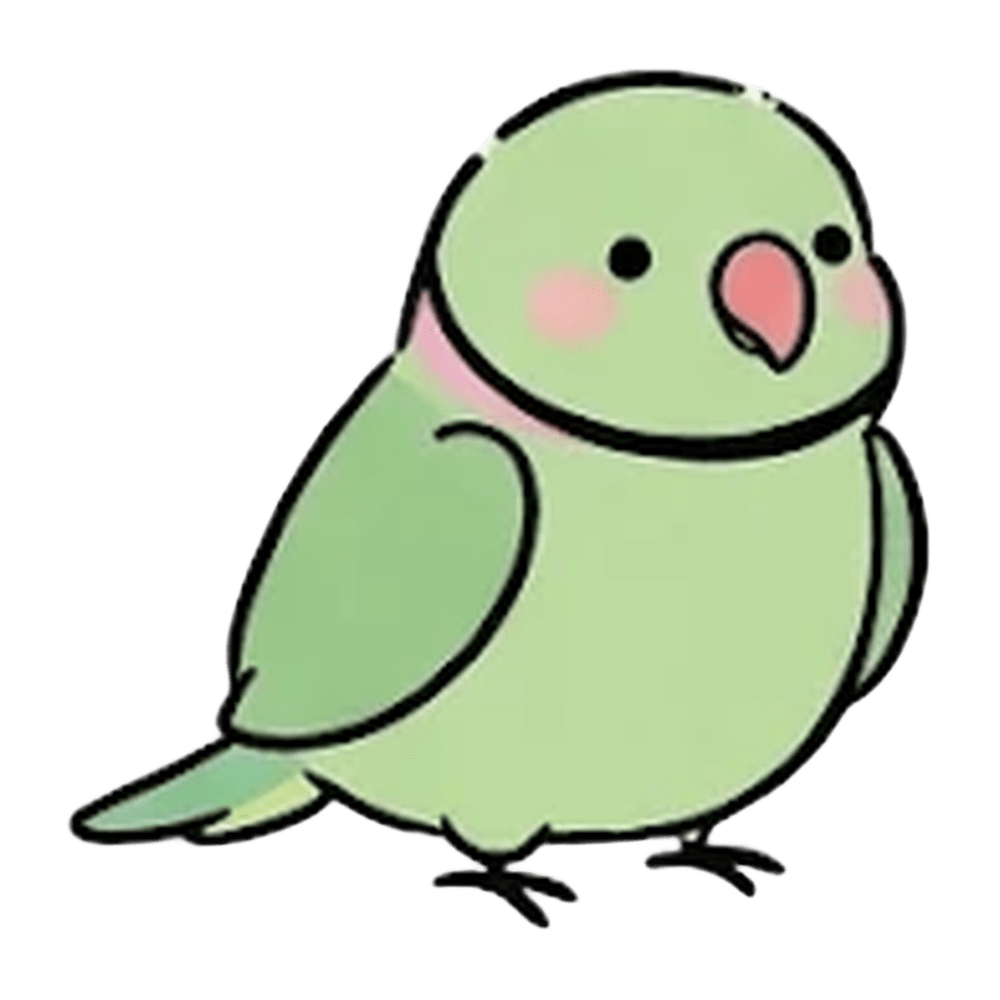
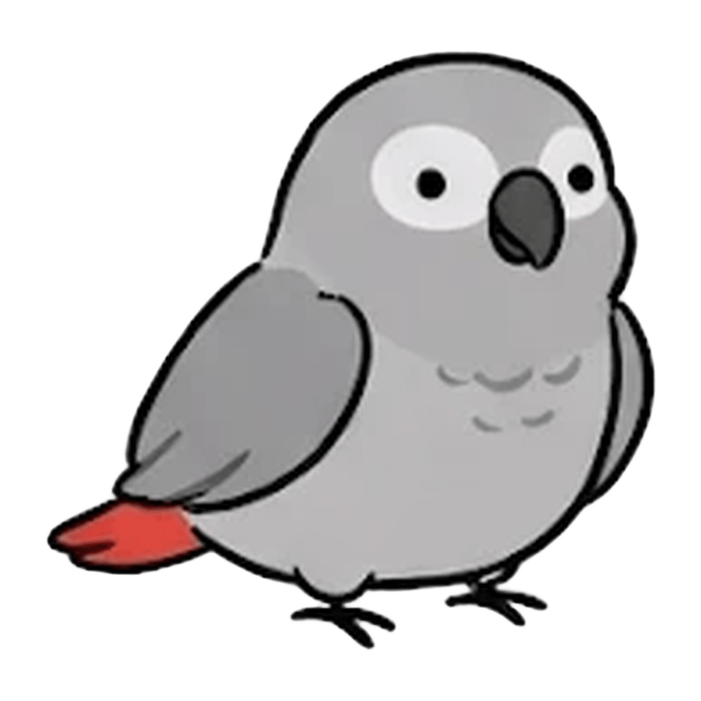

結合 Bird Care LLM Wiki 知識庫，為您打造 10 頁全面、科學且溫馨的新手完整照護指南。
評估四大常見小型鸚鵡性格、噪音與壽命，打造符合空間與安全標準的居家鳥窩。
建立滋養丸與新鮮蔬果黃金比例，避開酪梨、巧克力與鐵氟龍不沾鍋等致命風險。
解讀肢體與羽冠情緒訊號、實踐零壓力親訓，並掌握五大生病警訊與緊急保溫處置。

| 品種 | 平均壽命 | 噪音指數 | 學語能力 | 親人互動 | 推薦對象 |
|---|---|---|---|---|---|
| 虎皮鸚鵡 | 5–10 年 | ⭐⭐ | ⭐⭐⭐ | ⭐⭐⭐ | 首購族 / 公寓 |
| 玄鳳鸚鵡 | 15–20 年 | ⭐⭐⭐ | ⭐⭐ | ⭐⭐⭐⭐⭐ | 愛討摸 / 溫馴派 |
| 和尚鸚鵡 | 15–20+ 年 | ⭐⭐⭐⭐ | ⭐⭐⭐⭐⭐ | ⭐⭐⭐⭐ | 互動教學派 |
| 小太陽錐尾 | 20–25 年 | ⭐⭐⭐ | ⭐⭐ | ⭐⭐⭐⭐⭐ | 愛躺手 / 黏人派 |
小型鸚鵡壽命普遍長達 15～25 年，相當於陪伴孩子從小學一路長大到大學畢業，飼養前務必確認未來人生規劃能穩定陪伴。
鳥類清晨與黃昏有自然「晨喚／晚安叫」習性；若居住在隔音較差的集合住宅，建議優先考慮叫聲較輕柔的虎皮或母玄鳳。


主食核心。提供完整均衡的維生素、礦物質與胺基酸，避免長期純吃瓜子種子造成脂肪肝與營養失衡。
首選深綠色蔬菜（小松菜、地瓜葉、青江菜、花椰菜）與橘黃色蔬菜（南瓜、紅蘿蔔）。水果糖分高僅需少量點綴。
作為親訓獎勵、目標訓練與天冷時的熱量補充。切忌整碗裝滿任食，以免養成嚴重挑食習慣。
若鳥寶習慣吃種子不吃滋養丸，切勿直接斷食！應採取「早晚定時撒碎滋養丸在種子上」、「模仿人類津津有味吃給牠看」或泡軟混入蔬果泥，逐步引導轉換，並每日定時量體重監測健康。
若發現鳥寶誤食上述禁忌物，切勿自行催吐或亂餵偏方！應立即將剩餘食物與包裝收好保留以供獸醫參考，將鳥放入溫暖安靜之外出籠，並火速送往鳥類專科醫院。
鳥類常將食物浸泡水碗中，溫水極易滋生細菌。請每日早晚更換新鮮飲水並刷洗水碗內壁，避免黴菌與大腸桿菌感染。



平時健康時就先查好住家附近的「特寵／鳥類專科醫院」地址與急診電話，並準備好外出籠與電子體重計，關鍵時刻才能守護毛孩一輩子的健康！